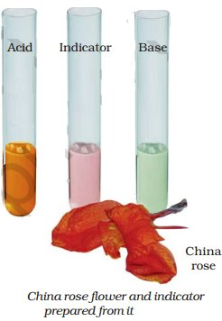

Procedure : Poke a pinhole in both ends of an egg and let it blows the insides out. Place the empty eggshells on a stand and fill them with hydrogen. All you need to make sure is maintaining a safe distance while watching it. Lighten the top of the egg and move away. Soon the hydrogen starts rising to the top of the egg and fills its bottom with air. As the hydrogen ignites, the gases in the egg get very hot and expand, creating high pressure, resulting in the exploding of the eggs.
Project 2 - Acid Rain
As the name indicates the rain containing excess of acids is called an acid rain. Where do these acids come from? The rain becomes acidic because carbon dioxide, sulphur dioxide and nitrogen dioxide (which are released into the air as pollutants) dissolve in rain drops to form carbonic acid, sulphuric acid and nitric acid respectively. Acid rain can cause damage to buildings, historical monuments, plants and animals.
Precaution:
Great care should be taken while handling laboratory acids and bases because these are corrosive in nature, irritating and harmful to skin.

Summary
Acids are sour in taste. Bases are bitter in taste and soapy to touch.
Acid turns blue litmus red. Bases turn red litmus blue.
Solutions of substances that show different colour in acidic, basic and neutral solutions are called indicators